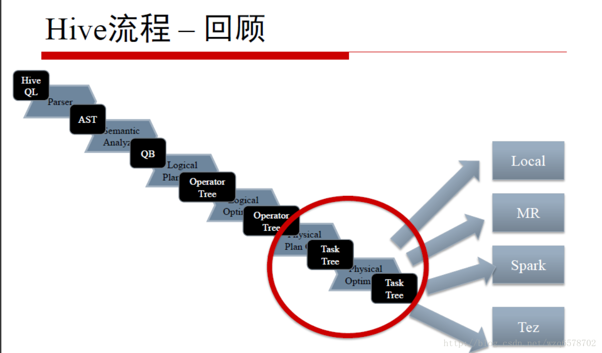
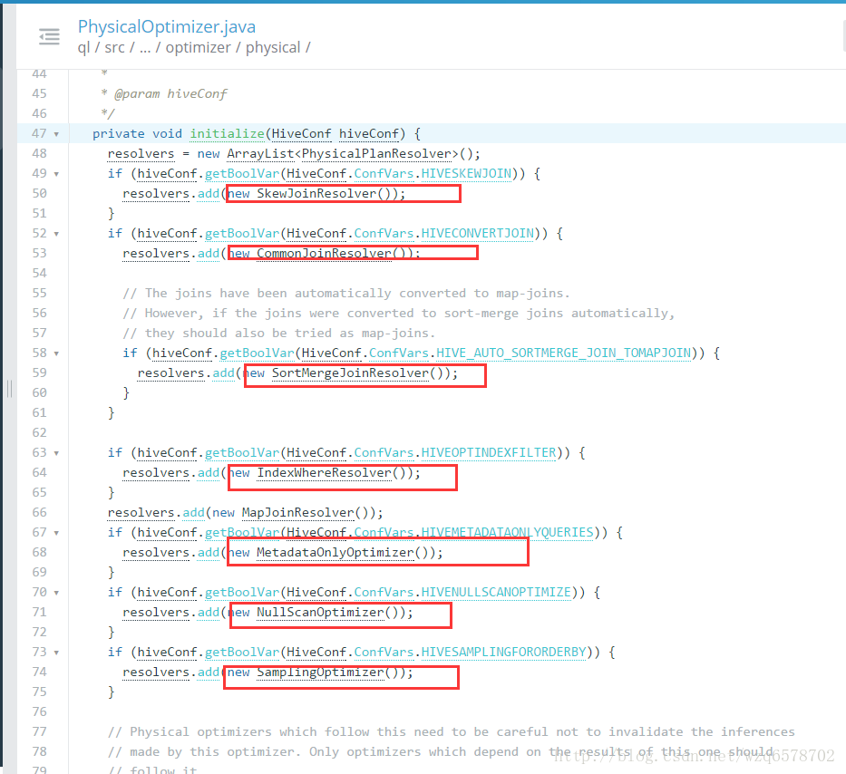
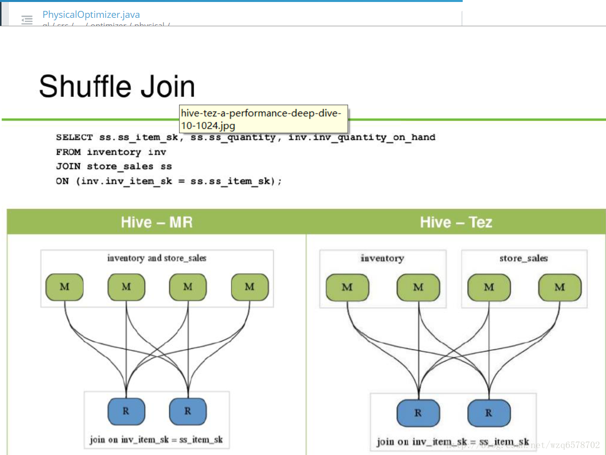

Hive执行
相关配置 https://insight.io/github.com/apache/hive/blob/master/common/src/java/org/apache/hadoop/hive/conf/HiveConf.java?line=2635
物理执行计划和逻辑执行计划的区别
举个例子
物理执行计划的Task类型
逻辑层和物理层的分界 https://insight.io/github.com/apache/hive/blob/master/ql/src/java/org/apache/hadoop/hive/ql/optimizer/Optimizer.java?line=228
1 2 3 if (!HiveConf.getVar(hiveConf, HiveConf.ConfVars.HIVEFETCHTASKCONVERSION).equals("none")) { transformations.add(new SimpleFetchOptimizer()); // must be called last }
SemanticAnalyzer第七步 https://insight.io/github.com/apache/hive/blob/master/ql/src/java/org/apache/hadoop/hive/ql/parse/SemanticAnalyzer.java?line=11356
1 2 3 4 5 6 7 8 9 10 11 12 13 14 15 if (LOG.isDebugEnabled()) { LOG.debug("Before logical optimization\n" + Operator.toString(pCtx.getTopOps().values())); } Optimizer optm = new Optimizer(); optm.setPctx(pCtx); optm.initialize(conf); pCtx = optm.optimize();//fetchTask在逻辑执行计划最后一步生成 if (pCtx.getColumnAccessInfo() != null) { // set ColumnAccessInfo for view column authorization setColumnAccessInfo(pCtx.getColumnAccessInfo()); } FetchTask origFetchTask = pCtx.getFetchTask();//fetchTask是物理执行计划的开始 if (LOG.isDebugEnabled()) { LOG.debug("After logical optimization\n" + Operator.toString(pCtx.getTopOps().values())); }
开始搞物理执行计划 https://insight.io/github.com/apache/hive/blob/master/ql/src/java/org/apache/hadoop/hive/ql/parse/TaskCompilerFactory.java?line=38
1 2 3 4 5 6 7 8 9 10 11 12 13 /** * Returns the appropriate compiler to translate the operator tree * into executable units. */ public static TaskCompiler getCompiler(HiveConf conf, ParseContext parseContext) { if (HiveConf.getVar(conf, HiveConf.ConfVars.HIVE_EXECUTION_ENGINE).equals("tez")) { return new TezCompiler(); } else if (HiveConf.getVar(conf, HiveConf.ConfVars.HIVE_EXECUTION_ENGINE).equals("spark")) { return new SparkCompiler(); } else { return new MapReduceCompiler(); } }
支持tez、spark、和mr方式。
TaskCompiler https://insight.io/github.com/apache/hive/blob/master/ql/src/java/org/apache/hadoop/hive/ql/parse/TaskCompiler.java?line=87
1 2 3 4 5 6 7 8 9 10 11 12 13 14 15 //生成物理执行计划 generateTaskTree(rootTasks, pCtx, mvTask, inputs, outputs); // For each task, set the key descriptor for the reducer for (Task<? extends Serializable> rootTask : rootTasks) { GenMapRedUtils.setKeyAndValueDescForTaskTree(rootTask); } // If a task contains an operator which instructs bucketizedhiveinputformat // to be used, please do so for (Task<? extends Serializable> rootTask : rootTasks) { setInputFormat(rootTask); } //物理优化 optimizeTaskPlan(rootTasks, pCtx, ctx);
TaskCompiler.generateTaskTree()
不同的引擎有不同的物理优化
MapReduceCompiler 生成物理执行计划
如何切割逻辑执行计划？ https://insight.io/github.com/apache/hive/blob/master/ql/src/java/org/apache/hadoop/hive/ql/optimizer/GenMapRedUtils.java?line=405
1 2 3 4 5 6 7 8 9 10 11 12 13 14 15 16 17 18 19 20 21 22 23 24 25 26 27 28 29 30 31 /** * Met cRS in pOP(parentTask with RS)-cRS-cOP(noTask) case * Create new child task for cRS-cOP and link two tasks by temporary file : pOP-FS / TS-cRS-cOP * * @param cRS * the reduce sink operator encountered * @param opProcCtx * processing context */ static void splitPlan(ReduceSinkOperator cRS, GenMRProcContext opProcCtx) throws SemanticException { // Generate a new task ParseContext parseCtx = opProcCtx.getParseCtx(); Task<? extends Serializable> parentTask = opProcCtx.getCurrTask(); MapredWork childPlan = getMapRedWork(parseCtx); Task<? extends Serializable> childTask = TaskFactory.get(childPlan, parseCtx .getConf()); Operator<? extends OperatorDesc> reducer = cRS.getChildOperators().get(0); // Add the reducer ReduceWork rWork = new ReduceWork(); childPlan.setReduceWork(rWork); rWork.setReducer(reducer); ReduceSinkDesc desc = cRS.getConf(); childPlan.getReduceWork().setNumReduceTasks(new Integer(desc.getNumReducers())); opProcCtx.getOpTaskMap().put(reducer, childTask); splitTasks(cRS, parentTask, childTask, opProcCtx); }
MR物理优化器 https://insight.io/github.com/apache/hive/blob/master/ql/src/java/org/apache/hadoop/hive/ql/optimizer/physical/PhysicalOptimizer.java?line=47

hive-on-MR vs hive-on-tez

TezCompiler https://insight.io/github.com/apache/hive/blob/master/ql/src/java/org/apache/hadoop/hive/ql/parse/TezCompiler.java?line=457
SparkCompiler https://issues.apache.org/jira/secure/attachment/12652517/Hive-on-Spark.pdf
很有意思
基于路径规则优化总结
深度优先递规下降遍历
提交不同引擎的作业MR
提交不同引擎作业Spark
提交不同引擎的作业Tez
Driver的 launchTask方法：https://insight.io/github.com/apache/hive/blob/master/ql/src/java/org/apache/hadoop/hive/ql/Driver.java?line=2130
广度优先，并发提交 https://insight.io/github.com/apache/hive/blob/master/ql/src/java/org/apache/hadoop/hive/ql/Driver.java?line=1830